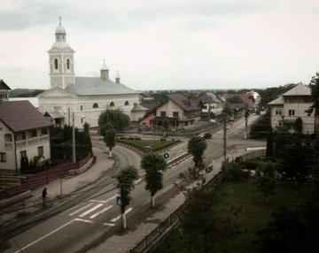
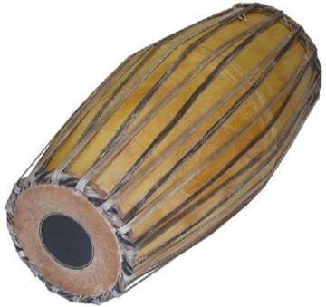
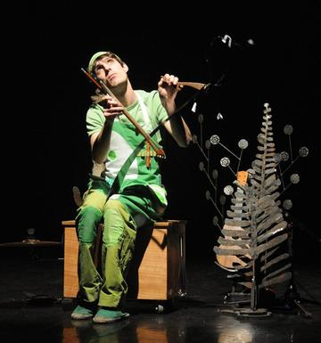

Macau Portuguese Custard Tart Bake
Portugal +1 · Crafts and making
Macho parado
Nicaragua · Street and playground games


Madura bull racing
Indonesia · Street and playground games
Maedeup
South Korea · Crafts and makingMaghrebi 5x5 capture game
Libya · Board and table games

Makonde ebony carving
Tanzania +1 · Crafts and makingMakonn
Seychelles · Board and table games
Malagasy lamba silk weaving
Worldwide · Crafts and makingPlay preview · in the Textile Crafts of the World app
Malambo
Argentina · DancesMalay draughts
Malaysia · Board and table gamesMaldivian chess
Maldives · Board and table games
Maldivian lacquer work
Maldives · Crafts and makingPlay preview · in the Woodcraft & Metal of the World app
Malha
Portugal · Archery, throwing and target games
Mancala-type sowing games
Central African Republic · Board and table games

Mangala
Turkey · Board and table gamesMangola
DR Congo · Board and table gamesManteo
Bolivia · Street and playground gamesMaonan flower bamboo hat
China · Crafts and makingPlay preview · in the Mats & Wicker of the World app
Maori stick games
New Zealand · Dexterity and skill games
Maple taffy on snow
Canada · Crafts and making

Marginea black pottery
Romania · Crafts and makingPlay preview · in the Tiles & Pottery of the World app

Marinera Norteña
Peru · Dances
Marshallese stick chart navigator
Marshall Islands · Puzzles and mind gamesMarshallese string figures
Marshall Islands · Dexterity and skill games

Masaya Hammock Weaving
Nicaragua · Crafts and makingPlay preview · in the Looms & Bands of the World app
Masenqo and the azmari
Ethiopia · Musical instrumentsPlay preview · in the Lutes & Fiddles of the World appMashonisa
Lesotho · Other traditions
Mashrabiya Lattice Joinery
Egypt +1 · Crafts and makingPlay preview · in the Paper & Paint of the World app
Masi bark-cloth stencil printing
Fiji · Crafts and makingPlay preview · in the Island Weaving of the World app
Mate Pouring
Argentina · Crafts and making


Mehndi henna pattern drawing
India +1 · Crafts and makingPlay preview · in the Paper & Paint of the World app

Mento band
Jamaica · Musical instruments
Mesoamerican ballgame
Guatemala +1 · Street and playground games
Mesob basket weaving
Ethiopia · Crafts and makingPlay preview · in the Basketry & Straw of the World app

Mezoued Bagpipe and Tabl Drum
Tunisia · Musical instruments

Mhele
Botswana · Street and playground games
Mijwiz Double Clarinet
Lebanon +3 · Musical instrumentsPlay preview · in the Music & Dance of the World app
Mithila folk painting
Nepal +1 · Crafts and makingMixtec ball game
Mexico · Street and playground games
Mochitsuki
Japan · Performance and storytelling

Moldovan Woven Carpet Pattern Studio
Moldova · Crafts and making
Mongol bichig
Mongolia · Crafts and making
Mongolian Bow Archery
Mongolia · Dexterity and skill games
Mongolian chess
Mongolia · Board and table games
Moraingy drum-and-strike duel
Madagascar · Wrestling and martial sportsPlay preview · in the Sports & Skill of the World app

Moruba / Ncuva
South Africa · Board and table games
Mountain dulcimer
United States · Musical instrumentsPlay preview · in the Zithers & Harps of the World app
Mounted Archery Course
Hungary · Dexterity and skill gamesPlay preview · in the Sports & Skill of the World app
Mridangam and konnakol rhythm game
India · Musical instrumentsPlay preview · in the Hand Drums of the World app
Mud Plaster Season
Mali · Crafts and making
Mudhif reed-arch house
Iraq · Crafts and making
Muqarnas stalactite vault builder
Iran · Crafts and making

Murga Uruguaya Carnival Troupe
Uruguay · Crafts and making

Musical glasses
Worldwide · Musical instrumentsPlay preview · in the Odd Instruments of the World app
Musical saw
United States · Musical instrumentsPlay preview · in the Odd Instruments of the World app
Mvet
Gabon +2 · Musical instruments